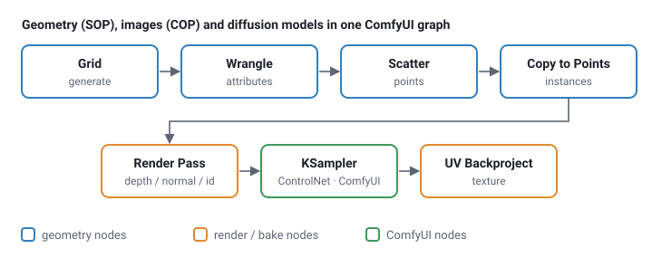

comfyui_pcg documentation#
comfyui_pcg brings Houdini-style procedural geometry (SOPs) and image processing (COPs / Copernicus) into ComfyUI. Every node is written in numpy, has a Houdini-style parameter panel, and is named after the Houdini node it replaces ("Clip (PCG)", "Scatter (PCG)", "COP Blur (PCG)" …). Geometry, height fields, textures and ComfyUI's AI nodes live in the same graph.

Start here#
- Getting started — install, first graph, how the panels work.
- For Houdini users — what maps 1:1, what is different, how to find a node.
- Example workflows — six small tutorials plus the showcase and production workflows that ship in
example_workflows/, each with a step-by-step walkthrough.
Concepts#
| Page | Covers |
|---|---|
| Geometry | Points, primitives, vertices, detail; attributes; groups; the spreadsheet. |
| Groups | The group pattern syntax accepted by every Group field. |
| Expressions | Expression nodes, expressions in parameter fields, ch(), frame variables, keyframe channels. |
| Wrangle syntax | The Wrangle language: attributes and type prefixes, @group_, operators, functions, Volume and COP Wrangle, VEX equivalents. |
| Parameters and panels | The Houdini-style panel, ramps, references between parameters, the Parameters (PCG) controller. |
| Loops and time | For-Each loops, frame loops, the playbar, trails. |
| Images (COP) | COP images, layers and channels, devices, converting to and from ComfyUI images and geometry. |
| Viewing and export | Preview images, the 3D viewport, cameras, exporting meshes, instances and images. |
| Wires | Wire styles, rewiring by the ends, cutting, snapping and arranging nodes, reference lines. |
| Keyboard and mouse | Every shortcut: canvas, parameter panel, viewport, handles, curve tool, playbar. |
Node reference#
The node reference documents all nodes: inputs, outputs, every parameter with its type, default and options, the Houdini equivalent and known differences. It is split into pages by category (geometry) and by topic (images). The Houdini node index goes the other way: from a Houdini SOP or COP to the node to use here.
Maintaining these docs#
The reference pages are generated. Parameter names, defaults, ranges, menu options and panel layout come from the code; the prose comes from docs/_data/nodes/*.json. After changing a node, edit its entry in the JSON and run
python comfyui_pcg/docs/build_docs.pytest_docs.py fails when a node or parameter has no text, when text exists for a parameter that is gone, when the generated pages are out of date, or when a link in the docs is broken.
HTML version. docs/html/ is the same documentation as a static site (sidebar, search that works offline, node icons, light / dark theme). Open docs/html/index.html in a browser, or publish it with GitHub Pages (.github/workflows/pages.yml; set Settings › Pages › Source to GitHub Actions). Rebuild it after any change to the Markdown:
python docs/build_html.pytest_docs_html.py fails when docs/html is stale, when a page is missing from the navigation, or when a link, anchor or picture of the site is broken.
Pictures. The concept diagrams are drawn by python tools/concept_diagrams.py. The "input → result" pictures of the node reference are rendered by the plugin's own viewport in headless Chromium: python tools/doc_images.py [node ...] (needs Node.js with playwright), then rerun build_docs.py and build_html.py. Node icons for the HTML come from node tools/render_doc_icons.mjs.